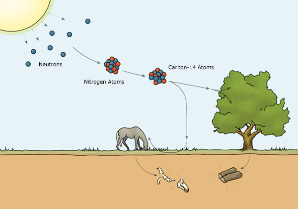

Radiocarbon dating, also known as carbon-14 dating or simply carbon dating, is used to calculate the approximate ages of carbon-based artefacts such as plants, bones or clothes.
Although carbon-12 is the stable, most abundant element of carbon on Earth, carbon-14 also enters the carbon cycle through various means such as photosynthesis (after combining with oxygen to form carbon dioxide, which plants intake) and then through the food chain, reaching humans as well. Once the organism dies, they no longer absorb carbon-14 as they can no longer consuming food.
The remaining carbon-14 will decay by beta minus decay to form nitrogen-14, an electron and an electron antineutrino. The rate of this decay is given by its half-life, equivalent to around 5,370 years for carbon-14.

Given the exponential decay formula $A=A_0e^{-kt}$ where $A$ = number of atoms left after time $t$, $A_0$ = number of atoms of the isotope in the original sample, $k$ = rate constant for radioactive decay,
To find $k$, note that when $t$ is at its half-life, $A$ will be half of $A_0$ (definition of half-life).
Substituting $k$,
Note: $k$ can also be found with calculus as it is a first-order differential reaction, but it is beyond the scope of this article which will focus on the applications of exponentials and logarithms.
Start
Some questions are worth more points than others!
Here is a glossary of the key terms used in this article. You may want to review some of them after you complete your comprehension check.
| Word | Definition |
|---|---|
| Term 1 | Term 1 definition |
| Term 2 | Term 2 definition |